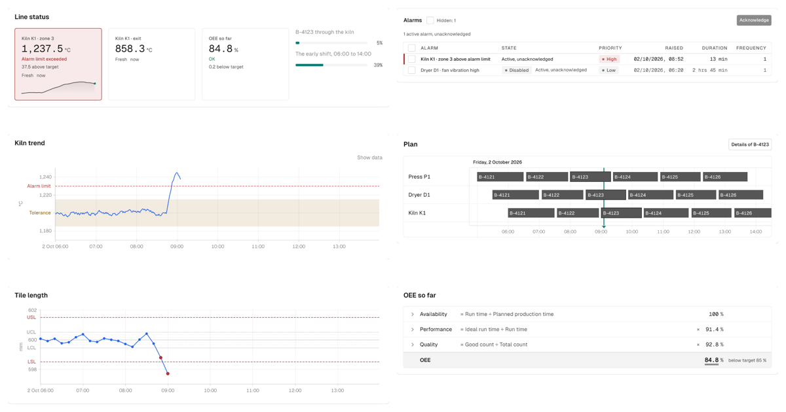

umriss-ui
React components for data-dense screens – control rooms, dashboards, planning – built to the industrial standards for alarms and limits, in English and German.
Five packages: a component library, canvas charts, a typed data table, a Gantt-style schedule and a calculation view. TypeScript, MIT, light and dark.
{{install}}
Packages
-
{{tiles}}